第六届浙江赛江齐文VS傅亮
首页
茗弈阁
#1 第六届浙江赛江齐文VS傅亮 作者：茗弈小刀 发表时间：2009-7-23 15:05:55
江苏高大俊朗的傅亮相信大家都已不陌生了，今年全团曾作为江苏领队带团参加比赛，取得了不错的成绩。这里我想介绍一下另一名棋手，江齐文（虫虫）。虫虫是广东人，现在在浙江台州教棋，07广东四季联赛第3名，09广西公开赛冠军，08全国赛25名，09浙江公开赛20名，是一位很具潜力的棋手。
这次他两比赛了2局，一局山月，一局瑞星。我们来看其中那盘瑞星：傅亮（白）虫虫（黑）
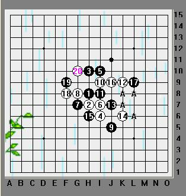
这个12手是最常见也最稳妥的，13个人认为最强。行至20手都是常见棋形，当然这个20还有其它选择，比如先主动在上边控制等。21手有很多点可以下，上图标A的四个点，比赛中都比较常见，局面基本还是属于混战。虫虫下了这个21.比较大胆也很积极，因为目前白下边还没有什么东西，所以看来这个21是很好的。
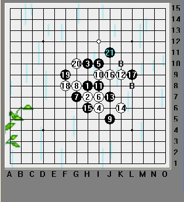
22手如果落在B的两个点，那么黑棋可以在21上边直接活三，拓展。那么局面形式对白非常不利。大亮这个22目的明确，控制大局。
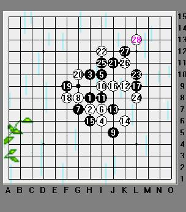
23--28黑白纠缠在一起，完成交换，消磨了右上的一些空间。
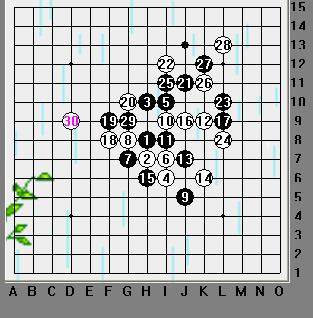
29手眠三主要目的是防守但也不排除虫虫正打着小算盘，个人感觉不太好，保守了。如果想利用上边的棋做文章，也不太好操作。30控制黑的活二在五子内，也抢夺了左边的外势。这样的控制方法我们是推荐的。
接下来黑怎么走比较好呢，我们先分析一下：
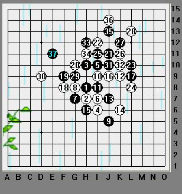
我们到这里已经感觉到黑的外势稍弱了，如果31冲了33眠三，那么这个34是唯一。36必档，那么黑37转到左边在现在这个位置或D12都是相当不错的，甚至35手直接在37位置。这也是对大局控制和自己棋形拓展的好手段，因为左下黑还是有棋，左上也占了，那么白被夹在中间比较难受，所以这里我们应该更注重大局的棋形培养。不过实战是没时间那么细致分析的，我们回到实战上看看虫虫是怎么下的：
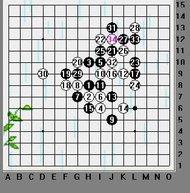
虫虫这个29果然是有阴谋的，31手已经迫不及待了！32手防在杀点。33仍不死心？34彻底粉碎了黑的美梦，见徒劳无果，35无奈转身。其实33手是大恶手！34如果下这里直接V了：
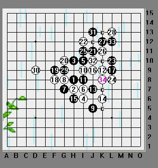
看来实战中我们还需要加强冷静的分析，知己知彼都很重要。回来看实战对局：
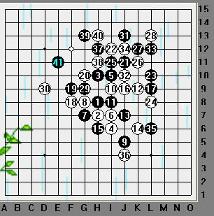
35转向防守，36仍然很漂亮的控制了下盘。可以看出虫虫是属于进攻性的棋手，到41手黑由于开始的盲攻并没占到便宜。
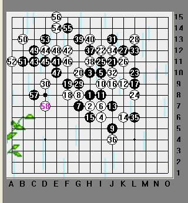
接下来虫虫发动了轰炸机般的进攻，但大亮都一一招架住处了，这里虫虫其实又犯错误了，47--败招！而亮的48看来也跟着黑的思路在走。正解如下：
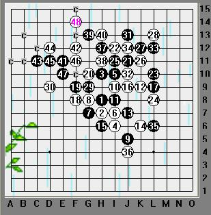
这里黑必须先把48那个四冲了，再回来走这里。
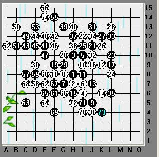
实战中黑继续进攻，空间只有下边了。但大势已去，白也再没有赢的机会。73手双方和棋。
这盘棋有些许遗憾，但实战毕竟和网站不同。客气话就不讲了，这里我要对2位棋手提点个人意见，仅供参考。首先是虫虫，进攻和做棋太野了，估计落子的速度也是比较快的，建议以后加强防守意识和提高大局观，推荐多看看顾炜老师的对局。对于大亮，局面控制非常棒，希望以后不仅要分析对手的棋，更要了解自己的棋。
最后祝愿2位棋手下次比赛发挥更好的状态，加油！我也会一直关注支持你们。
［ 梦醉南天 于 2009-7-23 15:19:44 时花20金币送鲜花一朵］
［ 潇洒 于 2009-7-23 15:20:25 时奖励此帖[金币加 20 威望加1］
［ 慎独 于 2009-7-23 15:22:04 时花20金币送鲜花一朵］
［ 飞哥 于 2009-7-23 15:31:22 时花20金币送鲜花一朵］
［ 静待花开 于 2009-7-23 15:33:18 时花20金币送鲜花一朵］
［ 安娜制作所 于 20
#2 Re:第六届浙江赛江齐文VS傅亮 作者：妙玉偷星 发表时间：2009-7-23 15:20:25
 师傅写得真好，跟着师傅我们也增进了对棋局的了解和认识
师傅写得真好，跟着师傅我们也增进了对棋局的了解和认识
#3 Re:第六届浙江赛江齐文VS傅亮 作者：慎独 发表时间：2009-7-23 15:21:55
 亲爱的又写棋评了呀
亲爱的又写棋评了呀
#4 Re:第六届浙江赛江齐文VS傅亮 作者：吃大米饭的鱼 发表时间：2009-7-23 15:23:48
看师傅写的文章棋评，听着这么美的音乐真是种享受
#5 Re:第六届浙江赛江齐文VS傅亮 作者：吃大米饭的鱼 发表时间：2009-7-23 15:24:40
学到好多东西，真是太幸福啦！
#6 Re:第六届浙江赛江齐文VS傅亮 作者：坏蛋色色色 发表时间：2009-7-23 15:29:17
 老姐的文章就是一个字：棒！
老姐的文章就是一个字：棒！
#7 Re:第六届浙江赛江齐文VS傅亮 作者：静待花开 发表时间：2009-7-23 15:32:56
亲爱的刀刀又写棋评了呀亲个宝贝
#8 Re:第六届浙江赛江齐文VS傅亮 作者：安娜制作所 发表时间：2009-7-23 15:56:29
师傅写得好详尽好生动哈！
#9 Re:第六届浙江赛江齐文VS傅亮 作者：茗弈逐曰 发表时间：2009-7-23 16:08:51
学习ing
#10 Re:第六届浙江赛江齐文VS傅亮 作者：启蒙 发表时间：2009-7-23 16:54:46
支持小刀姐能多写棋评。大家多送花多加威望啊！！
#11 Re:第六届浙江赛江齐文VS傅亮 作者：罗马王子 发表时间：2009-7-23 17:10:03
分析的真好！需要好好总结一下。谢谢！
#12 Re:第六届浙江赛江齐文VS傅亮 作者：茗弈宽容 发表时间：2009-7-23 17:15:12
我想作者最希望听到的就是棋手的肯定，那么辛苦也是值得的。我们大家也能学习到东西，谢谢。
#13 Re:第六届浙江赛江齐文VS傅亮 作者：茗弈求学 发表时间：2009-7-23 18:07:24
学习
#14 Re:第六届浙江赛江齐文VS傅亮 作者：王志伟123 发表时间：2009-7-23 19:45:31
顶！
#15 Re:第六届浙江赛江齐文VS傅亮 作者：南京小飞机 发表时间：2009-7-24 7:04:45
江齐文下棋太稳了，大亮师父好棒！
#16 Re:第六届浙江赛江齐文VS傅亮 作者：高星 发表时间：2009-7-24 8:27:02
 吃大米饭的鱼
吃大米饭的鱼
#17 Re:第六届浙江赛江齐文VS傅亮 作者：木木夕 发表时间：2009-7-24 13:58:47
得太好了，W。
#18 Re:第六届浙江赛江齐文VS傅亮 作者：五步之道 发表时间：2009-7-24 18:50:30
路过 看过 学习了
#19 Re:第六届浙江赛江齐文VS傅亮 作者：撒蓉儿 发表时间：2009-7-25 10:07:30
棋手棒棋评更棒